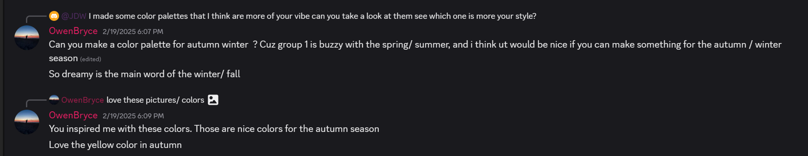
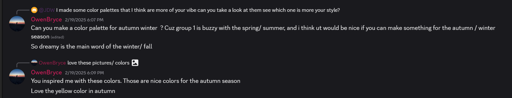
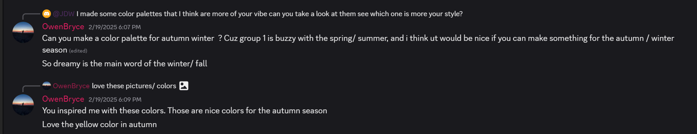

COMMUNICATION & FEEDBACK:
 

Throughout this project, I stayed true to the values that matter most to me doing my work properly, staying focused, being respectful, and creating designs with meaning. I didn’t just want to make something that looked good I wanted to make sure it had a clear purpose and told the right story. Every design decision I made was guided by what we were trying to communicate through the Owen Bryce brand. Whether it was creating the logo, choosing the color palette, or working on the layout, I made sure everything connected back to the message and goals of the project. I focused on making thoughtful choices, staying organized, and respecting the ideas and input of others in the group. These values helped me stay grounded and focused on creating something meaningful, not just something visually attractive.
One of the most important parts of this project was understanding who Owen Bryce was not just as a brand, but as a person. We asked clear and thoughtful questions about the feeling he wanted his brand to give, what kind of vibe he liked, what colors and themes inspired him, and how he thought about branding overall. These conversations helped us understand his vision on a deeper level. By asking the right questions, we were able to build a design direction that actually matched his personality and message. It made the project feel more personal and authentic, and it allowed me and my team to create ideas that had real meaning. I also learned how important it is to listen carefully, take notes, and communicate openly within the team to make sure we were all working toward the same goal.
Throughout the entire project, I stayed curious. I kept looking for ways to improve my designs, learn from professional designers, and understand how real branding projects are done. I looked at other portfolios, explored new styles, and tried out different tools and layouts to see what worked best. I was always asking myself: Can I make this better? How would a professional approach this? What’s missing in my design right now? This mindset helped me stay creative and open-minded. I wasn’t afraid to explore new ideas or make changes to improve something. I learned that curiosity is what pushes a design to go from average to great and it helped me keep learning and growing every step of the way.
This project helped me understand what personal leadership really means. It’s not just about leading others it’s also about leading yourself. It means being responsible, staying true to your values, being open to learning, and giving your best effort, no matter what. I learned that when I bring my core values, clear communication, curiosity, and dedication together, I work better and the results are stronger. This project reminded me that design isn’t just about skills it’s about mindset, discipline, and passion. I’m proud of how I showed up for this project, and I’ll carry these lessons with me into every future challenge. View Section Result
I learned that personal leadership is not just about leading a team it’s also about how you lead yourself throughout a project. I learned how important it is to stay focused, responsible, and consistent in everything I do, even when things become challenging. I practiced showing up with a professional mindset being reliable, respectful, and committed to doing my part to the best of my ability. I also learned how much of a difference strong communication makes in creative work. Asking thoughtful questions, actively listening, and understanding the needs of others (like our fictional client Owen Bryce) helped me create designs that were more meaningful and on point. I saw how clearly communicating within a team helps keep everyone on the same page and leads to better results. My curiosity played a big role in my growth. By constantly researching, observing other designers, and exploring new ideas, I was able to push my creativity further and see how professionals approach their work. This mindset helped me challenge myself and improve my designs with every step. Finally, I learned that dedication pays off. No matter how difficult something seemed, staying patient, putting in the time, and continuing to improve helped me deliver work I’m proud of. These lessons responsibility, curiosity, communication, and commitment are things I’ll carry with me into all my future projects.
This project matters to me because it showed me who I am when I work under pressure, in a team, and on something that truly matters. It helped me realize that being a good designer isn’t just about talent it’s about being responsible, curious, focused, and professional in every part of the process. It also helped me see my own growth. I took initiative, worked hard, stayed committed, and kept improving, even when things got tough. That built my confidence and made me feel more ready for real design work not just as a creative person, but as someone who can lead themselves and support their team. This experience made me believe more in my potential. It showed me that if I stick to my values, stay open to learning, and keep putting in the work, I can take on any project with confidence and give it real meaning. That’s something I’ll always be proud of.
